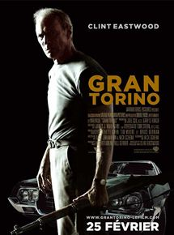
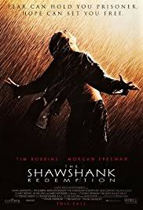

I am a young optimistic person having studied Business Engineer and Entrepreneurship at University. I like playing sports: I practice tennis and soccer in competition and stopped field hockey this year after several years of practice. I am looking for a job opportunity in the payment services industry, in the investment and/or financial analysis industry .
Le Wagon|  |
#1 : Gran TorinoGran Torino is a 2008 American drama film directed and produced by Clint Eastwood, who also starred in the film. The film co-stars Christopher Carley, Bee Vang and Ahney Her. This was Eastwood's first starring role since 2004's Million Dollar Baby. The film features a large Hmong American cast, as well as one of Eastwood's younger sons, Scott. Eastwood's oldest son, Kyle, provided the score. Gran Torino opened via a limited theatrical release in North America on December 12, 2008, and later to a worldwide release on January 9, 2009. Set in Detroit, Michigan, it is the first mainstream American film to feature Hmong Americans. Many Lao Hmong war refugees resettled in the U.S. following the communist takeover of Laos in 1975. |
|  |
#2 : The Shawshank RedemptionThe Shawshank Redemption is a 1994 American drama film written and directed by Frank Darabont, based on the 1982 Stephen King novella Rita Hayworth and Shawshank Redemption. It tells the story of banker Andy Dufresne (Tim Robbins), who is sentenced to life in Shawshank State Penitentiary for the murder of his wife and her lover, despite his claims of innocence. Over the following two decades, he befriends a fellow prisoner, contraband smuggler Ellis "Red" Redding (Morgan Freeman), and becomes instrumental in a money laundering operation led by the prison warden Samuel Norton (Bob Gunton). William Sadler, Clancy Brown, Gil Bellows, and James Whitmore appear in supporting roles. |